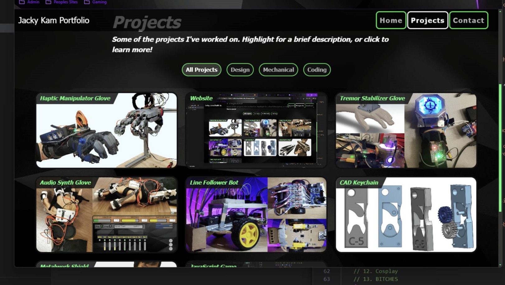
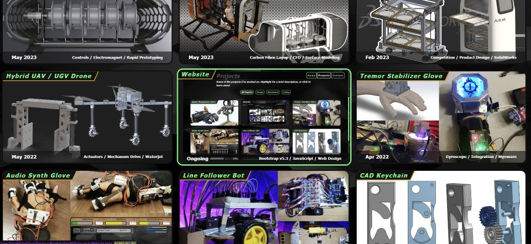
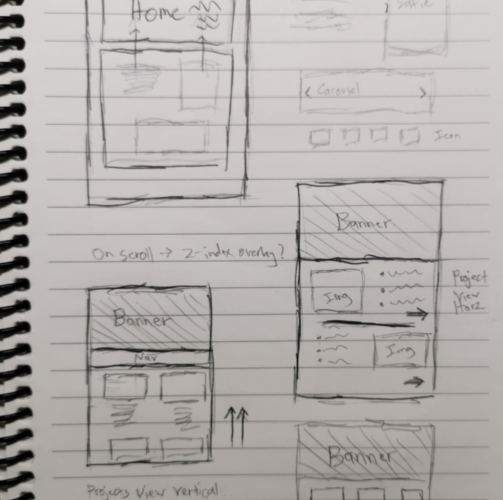
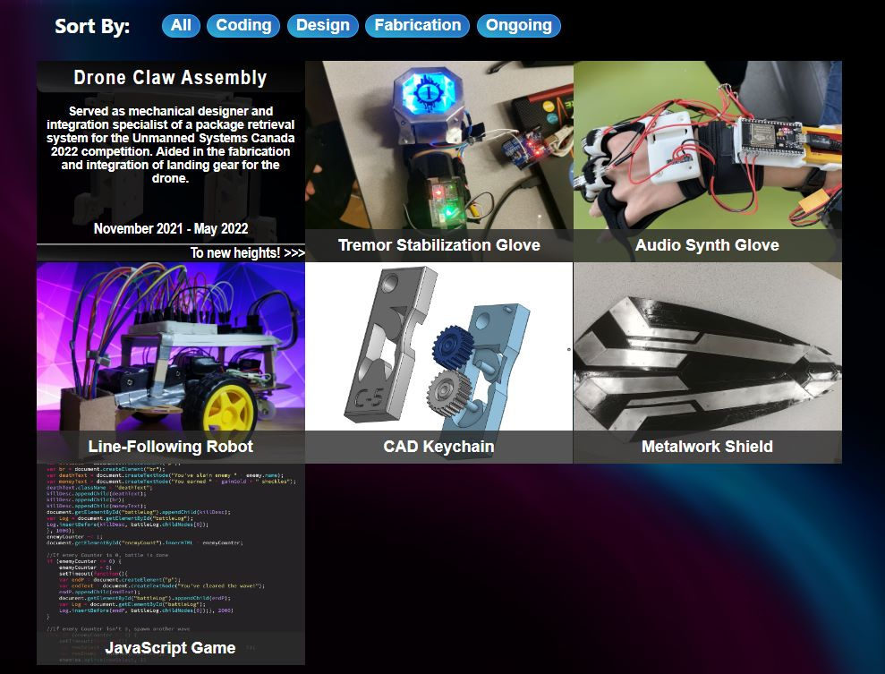
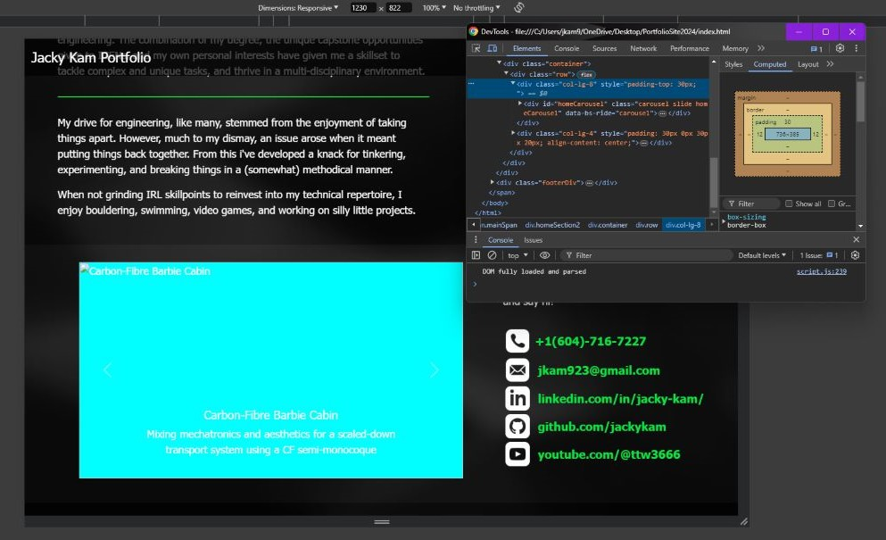

Like many others, I wanted to create a personal website to compile my project work over the years to show employers and fellow engineers. This has been an ongoing project where I code my website from scratch in order to practice front-end web design, whilst finding my style and brand. Though constantly in progress of being updated, whatever you’re seeing right now is the most up-to-date rendition!
- Given the mechanical aspects of most of my projects, I also wanted a place to practice front-end web design.
Ideation
Similar to any mechanical design, the first step of designing my website was to find inspiration and compile elements / features I liked. Through YouTube videos, looking at the websites of my peers, and searching the internet, I took note of the different elements employed by people that made their pages unique or eye-catching.

Website 2021
My first website was designed back in the summer of 2021. From the ideation phase, I noted down all the potential features I wanted to include such as an email form, project sorting, link to download resume and project portfolio, etc. These were then sorted into ‘buckets’ which would eventually guide how many pages I wanted to work with, eventually landing on a Home Page, About Me, Contact, and Projects.
Website 2022
Moving into 2022, I had learned about a key aspect of web design, that being the importance of responsive design. Having a website compatible with mobile, tablets, monitors, and other aspect ratios was something I hadn’t taken into consideration in my first pass, so my next iteration tore down the static structure, and replaced everything making use of Bootstrap v4.0. Most of the elements remained the same, although I also experimented with animating the projects as they loaded sequentially, as well as better organizational structure in Javascript.

Current Design
The current design was a complete rework, introducing a more cohesive black, green, and gold-accented colour scheme. I cleaned up some of the flexboxes with the updated Bootstrap v5.3, and tidied up some of the Javascript behind the scenes. By using objects to store projects, I was able to easily manipulate the metadata and info to be displayed, allowing me to easily rearrange and add new projects as time goes on.
Most importantly, the previous iterations had an abysmal layout, with the entire website flattened on one HTML document. By making each project and navigation page separate, the organization and maintenance has improved significantly, hopefully allowing this page to scale in the future with no issues.

As I continue to expand my repertoire through new projects, hopefully this website will continue being updated. As it is now, I’m simply aiming for designing something more polished, as the webpage elements still feel unrefined and not “professional” to me. Some of the potential avenues of improvement are:
- Attempt to use more industry practices when coding to make things more standardized and legible
- Make use of better colour palettes (having more colours for primary, secondary, tertiary, highlights, etc.)
- Have a mix of flexbox and grid elements for better responsive pages
- Add more interactive elements and visual appeal like animations to enhance UI / UX
- Look into reducing the loaded elements on the page to reduce RAM usage (I did not know PNG resizing caused such a noticeable difference in page load times :< )
- Maybe begin looking into moving everything onto an actual domain instead of using GitHub Pages services